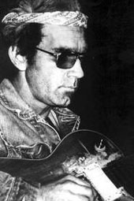
Настоящее имя: Жан-Жак Кейл (Jean-Jacques Cale). Родился 5 декабря 1938-го года в городе Талса (Tulsa), штат Оклахома (Oklahoma), США (USA).Кейла нельзя назвать блюзовым музыкантом в чистом виде, но его музыка впитала в себя все корни американской музыки, включая блюз, джаз, кантри, фолк и кейджун (cajun). Мягкая манера пения, виртуозная игра на гитаре и великий талант в написании песен заслужили признание как у публики, так и у его собратьев-музыкантов. Без него вряд ли бы мы заметили Эрика Клэптона (Eric Clapton) и Марка Нопфлера (Mark Knopfler), а так же многих других современных музыкантов, исполняющих его вещи и воспитанных на его альбомах.
Он начал профессионально выступать еще в 50-е годы, играя на гитаре в свинговых группах на западе США. После появления на свет рок-н-ролла Кейл организовал свою группу Johnnie Cale And The Valentines, а потом уехал в Нэшвилл чтобы начать карьеру кантри-музыканта. После того, как с этой идеей ничего не вышло, он перебрался в Лос-Анжелес, где и встретился с другими музыкантами из Талсы: Леоном Расселом (Leon Russel), Карлом Рэдлом (Carl Radle) и Чаком Блэкуэллом (Chuck Blackwell). Там он играл в барах, работал инженером в студии и записал несколько безуспешных синглов. Потом познакомившись с Роджером Тиллисоном (Roger Tillison), записал с ним психоделический альбом 'A Trip Down Sunset Strip'. Альбом был записан на группу Leathercoated Minds, и является раритетом и культовой пластинкой для коллекционеров.
Вернувшись в Талсу в 67-ом году, он оставался там незаметным талантом до того момента, когда Клэптон записал его песню 65-го года 'After Midnight' на своем первом альбоме. Кейл сказал тогда: "Это как обнаружить случайно нефть на своем собственном огороде."
После чего продюсер Оди Эшуорт (Audie Ashworth) пригласил его в Нэшвилл, где они записали великолепный альбом 'Naturally'. Пленку отправили Расселу и тот издал ее на своем лейбле Shelter. Альбом был записан с помощью опытных сессионных музыкантов и во многом определил будущий стиль Кейла. Последующие альбомы лишь подтвердили его статус великолепного автора и исполнителя. Клэптон исполнил также его 'Cocaine' и 'Travelin' Light' с альбома 'Troubadour', а также 'I'll Make Love To You Anytime' с пластинки '5'. Масса других музыкантов исполняют композиции Жан-Жака, самые популярные, пожалуй, 'Call Me The Breeze', 'Cajun Moon' и 'Sensitive Kind'.
JJ продолжает играть музыку и по сей день. Его последний студийный альбом датируется 1996-ым годом, а недавно вышла подборка его концертных вещей. Трудно выделить какой-либо из его альбомов - они все достаточно ровные и интересные. Приводим дискографию J.J.Cale на период февраля 2002 года.
Дмитрий Казанцев
Дискография |
|||
|---|---|---|---|
Альбомы |
|||
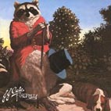 |
NATURALLY - 1972 - Mercury | 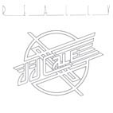 |
REALLY - 1973 - Mercury |
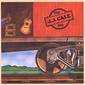 |
OKIE - 1974 - Mercury | 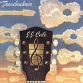 |
TROUBADOUR - 1976 - Mercury
|
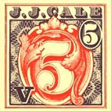 |
5 - 1979 - Mercury | 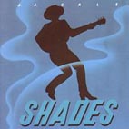 |
SHADES - 1981 - Mercury |
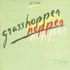 |
GRASSHOPPER - 1982 - Mercury | 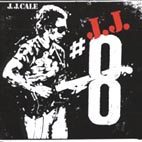 |
NUMBER 8 - 1983 - Mercury |
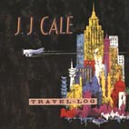 |
TRAVEL-LOG - 1990 - Silvertone | 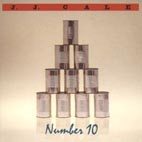 |
NUMBER 10 - 1992 - Silvertone |
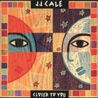 |
CLOSER TO YOU - 1994 - Delabel | 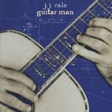 |
GUITAR MAN - 1996 - Delabel |
Сборники |
|||
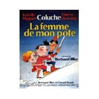 |
LA FEMME DE MON POTE - 1984 - Mercury (ОСТ к французскому фильму "Девушка моего лучшего друга") | 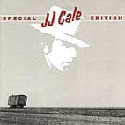 |
SPECIAL EDITION - 1984 - Mercury |
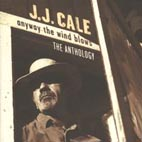 |
ANYWAY THE WIND BLOWS (2CD) - 1997 - Mercury (очень нужная компиляция; много материала плюс несколько неизданных треков) | 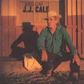 |
THE VERY BEST OF J.J. CALE - 1998 - Mercury |
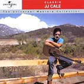 |
UNIVERSAL MASTERS COLLECTION - 2000 - Mercury | 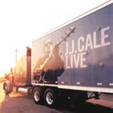 |
LIVE - 2001 - Delabel (сборник концертных номеров за 90-е годы) |
Читайте дополнительную информацию на сайте www.jjcale.com
Полное собрание текстов J.J.Cale